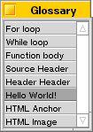

Glossary
The glossary is a place where you can tie often-typed pieces of text to a single keystroke. The interface to this mechanism is a bit awkward as yet, but a nice graphical shell will be yours in a future release.
|
Another way to enter glossary text into the edit window is by using the Glossary window. This is a window that shows all the entries in the Glossary that have names. If you double click an item in this window its text will be entered in the frontmost edit window. As it is now, all the glossary entries are stored inside one text file located in the ~/config/settings/pe/ directory. You can open this file with Pe and edit it. If you change parts of it you can test the result directly without restarting Pe by simply reloading the Glossary with the Preferences Panel. |
 |
The Glossary file is a structured file; it should always have the same header line and the items are identified by their own tags as well. Here you see a sample from the default Glossary as supplied with your copy of Pe:
### pe Glossary
## option-f ## For Loop
for ($insert$;;)
{
;
}
## command-option-w ## While Loop
while ($insert$)
{
}
## control-f8 ## Function Body
void $selection$($insert$)
{
} /* $selection$ */
## shift-f8 ## File Header
/*
$file$
Copyright $name$
Created: $date$ $time$
*/
$insert$
## f12 ## Hello World!
Hello, World!
## option-shift-a ## HTML Anchor
<a href="$insert$">$selection$</a>
## option-shift-i ## HTML Image
<img src="./$insert$">
## option-shift-1 ## HTML Heading 1
<h1>$selection$</h1>
## option-shift-2 ## HTML Heading 2
<h2>$selection$</h2>
## option-shift-3 ## HTML Heading 3
<h3>$selection$</h3>
As you can see, the first line identifies this file as a valid Glossary file. The second line contains the first entry to the Glossary. It starts with two number signs (#), followed by the description of the shortcut that is assigned to this entry. The shortcut can be any ascii character or function key optionally prepended with one or more modifier keys.
Optionally, this line can be continued with yet another pair of number signs and a name. This name will show up in the Glossary window. If the name is not present, this item will not be entered in this window.
The supported modifier keys are: option, command, shift, menu and control.
Beware though, Pe checks in an early stage whether a keydown is a glossary key. This means you can replace any key combination with your own text, thus making it even impossible to type text.
The text entered by Pe will be indented to the same level as the line where the caret was at the moment of insertion.
Pe's Glossary capability is extended by its ability to assign values to certain variables. At the moment of insertion, these variables are replaced with their current value.
These are the currently supported variables:
| Variable | Value when inserted |
| $date$ | the current date |
| $dir$ | the dirname part of the path of the document being edited |
| $file$ | the basename part of the path of the document being edited |
| $file_define$ | the base name of the file in uppercase with non alpha numeric characters replaced with underscores. |
| $insert$ | this one has no value, it only directs Pe to place the caret at this position when done |
| $name$ | the real name entered in the first pop account, the one you seen when you open the e-mail control panel |
| $selection$ | the text that was selected when you pressed the key to activate the Glossary |
| $time$ | the current time |
Last updated: 11/13/98
Copyright 1997,1998, © Hekkelman Programmatuur,
info@hekkelman.com